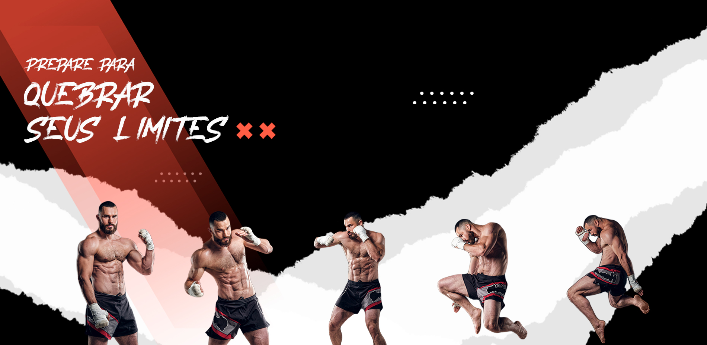

<app-header class="header"></app-header>
<div id="demo">
  <section class="first-section">
    
    <div class="show-scroll-down pt-3">
      <div class="chevron"></div>
      <div class="chevron"></div>
      <div class="chevron"></div>
      <span class="text">
        Scroll <span class="gradient">down</span>
      </span>
    </div>
  </section>
  <section class="second-section">
    <span class="wrap-title">
      <hr style="width: 30%; align-self: center;">
      <h1 class="second-section-title">
        Nossas <span style="color: #E43131">modalidades</span>
      </h1>
      <hr style="width: 30%; align-self: center;">
    </span>
    <div class="row col-12" style="height: 400px; display: flex; align-content: space-around;">
      <div class="col-6 col-md-3 second-section-icons" *ngFor="let icon of icons" data-aos="fade-zoom-in"
        data-aos-offset="100" data-aos-easing="ease-in-out-sine" data-aos-duration="1000">
        
        <div class="col-12 pt-2 icon-title" style="font-size: 1.3rem;">{{icon.title}}</div>
      </div>
    </div>
  </section>
  <section class="third-section">
    <div id="carouselExampleIndicators" class="carousel slide" data-bs-ride="carousel">
      <div class="carousel-inner">
        <div class="col-12 carousel-item" [ngClass]="getSliderClass(isFirst, isLast, isEven, isOdd)"
          [ngStyle]="getSliderStyle(slide.src)"
          *ngFor="let slide of slides; index as i; first as isFirst; last as isLast; even as isEven; odd as isOdd">
          <div class="carousel-caption carousel-content d-sm-block" style="background: #000000a3;">
            <h2>{{slide.title}}</h2>
            <hr>
            <p class="p-4 m-0" [ngStyle]="{'font-size': '20px'}">{{slide.content}}</p>
          </div>
        </div>
      </div>
      <button class="carousel-control-prev" type="button" data-bs-target="#carouselExampleIndicators"
        data-bs-slide="prev">
        <span class="wrap-control">
          <span class="carousel-control-prev-icon" aria-hidden="true"></span>
        </span>
      </button>
      <button class="carousel-control-next" type="button" data-bs-target="#carouselExampleIndicators"
        data-bs-slide="next">
        <span class="wrap-control">
          <span class="carousel-control-next-icon" aria-hidden="true"></span>
        </span>
      </button>
    </div>
  </section>
  <section class="fourth-section">
    <span class="text-center d-flex justify-content-between">
      <hr style="width: 30%; align-self: center;">
      <h1 class="fourth-section-title">
        <span style="color: #E43131">Fatos</span> curiosos
      </h1>
      <hr style="width: 30%; align-self: center;">
    </span>
    <div class="col-12 curiosities" *ngFor="let curiosity of curiosities" data-aos="fade-right" data-aos-duration="1000"
      data-aos-easing="ease-in-out">
      <span class="fourth-section-image-wrap">
        
      </span>
      <span class="p-5">
        <div class="curiosity-title">{{curiosity.title}}</div>
        <p class="curiosity-content">{{curiosity.content}}</p>
      </span>
    </div>
  </section>
</div>
<app-footer></app-footer>

<button *ngIf="isScroll == true" (click)="scrollTop()" mat-fab color="accent"
  class="btn btn-dark button-scroll-top position-fixed hvr-icon-bob">
  <i class="fa-solid fa-arrow-up"></i>
</button>